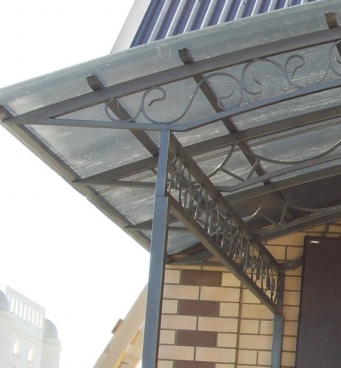

Metall oder Holz? Die beste Wahl für Vordächer, Carports und Terrassen
Wer ein Vordach, einen Carport oder eine Terrassenüberdachung plant, steht schnell vor der Frage: Metall oder Holz? Beide Materialien haben klare Vorteile – und entscheidende Unterschiede bei Pflege, Lebensdauer und Kosten. In diesem Vergleich zeigen wir, wann welches Material sinnvoller ist.

1. Haltbarkeit: Welches Material hält länger?
Metall
Verzinkter oder pulverbeschichteter Stahl ist extrem langlebig. Richtig verarbeitet, hält eine Metallkonstruktion 25–40 Jahre – oft länger als das Dach selbst. Ideal für Standorte mit viel Regen oder Schnee.
Holz
Holz ist robust, aber empfindlicher gegenüber Feuchtigkeit. Entscheidend für lange Haltbarkeit sind:
- konstruktiver Holzschutz (Abtropfkanten, kein Bodenkontakt)
- gute Lasuren / Öle
- regelmässige Pflege im Abstand von 2–5 Jahren
2. Optik: moderner Metall-Look oder warmes Holz?
Optisch gehen beide Materialien völlig unterschiedliche Wege:
- Metall: klar, modern, geometrisch – passt gut zu Neubauten
- Holz: warm, natürlich – harmoniert mit Gärten und klassischen Häusern
- Kombinationen: Metallgestell + Holzdecke = sehr beliebt
3. Pflege & Aufwand
Metall
Pulverbeschichtete oder verzinkte Konstruktionen sind fast wartungsfrei. Einmal im Jahr reinigen – das war’s. Ideal für alle, die wenig Zeit investieren wollen.
Holz
Holz braucht Pflege. Je nach Wetterlage:
- alle 2–4 Jahre Lasur erneuern
- bei starken UV-Belastungen sogar jährlich nachölen
- Sockelbereiche unbedingt gegen Spritzwasser schützen
4. Kosten: Was ist günstiger?
Die Preise hängen stark von Grösse und Ausführung ab. Grober Vergleich:
- Holz: meistens etwas günstiger beim Material
- Metall: höhere Lebensdauer → langfristig oft günstiger
Für viele Kunden ist Metall auf die Jahre gerechnet die wirtschaftlichere Wahl.
5. Was empfehlen wir aus der Praxis?
Viele Projekte in Zürich zeigen: Metall eignet sich besonders für langlebige, moderne Konstruktionen – etwa Carports oder Vordächer. Holz punktet bei gemütlichen Terrassen oder kleineren Überdachungen.
Sehr beliebt ist eine Kombination: Metall als tragende Struktur, Holz für die sichtbaren Elemente. So verbindet man Haltbarkeit mit Wärme und Optik.
6. Fazit: Die richtige Wahl hängt vom Einsatz ab
Für stark belastete, wetterexponierte Konstruktionen empfehlen wir Metall. Für Terrassen und Bereiche, die optisch warm wirken sollen, ist Holz eine hervorragende Wahl. Und wer das Beste aus beiden Welten möchte, entscheidet sich für eine Hybridlösung.